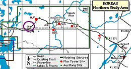
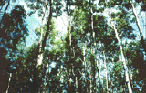
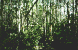
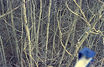
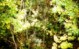
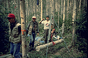

The Old Aspen site contained a large Terrestrial Ecology (TE) canopy-access tower that topped out in the canopy of large aspen trees. This allowed researchers to take samples from within the canopy, and to make measurements using the living trees themselves. Other data was collected on the ground. There was no other infrastructure at the site. This site is also referred to as "NSA-9OA-9TETR".
 Location of the NSA within Canada. |
 Location of the Old Aspen site within the NSA. |
| NSA Old Aspen Site also called NSA-9OA-9TETR (click here for detailed info) |
||
| Latitude: 55.88691 | UTM Easting: 520342 | BOREAS X: 766.186 |
| Longitude: -98.67479 | UTM Northing: 6193540.7 | BOREAS Y: 612.121 |
| Elevation (ASL): 259.09 m | UTM Zone: 14 | |
|  The aspen canopy seen from the ground |  The thick undergrowth in the aspen forest |
|  Aspen trees from the OA canopy tower in spring. This picture is looking at the ground through the aspen trees from the top of the TE tower, just before leaf-out in June 1994. |  Aspen trees from the OA canopy tower in fall. This picture is looking at the ground through the aspen trees from the top of the TE tower in the autumn, September 1994. |
|  TE-6 does biomass and allometry readings | |
Related Pages:
 BOREAS Home
BOREAS Home
 Study Region Overview
Study Region Overview
 Northern Study Area (NSA)
Northern Study Area (NSA)
 NSA Old Aspen Site (NSA-OA)
NSA Old Aspen Site (NSA-OA)
 SSA Old Aspen Site (SSA-OA)
SSA Old Aspen Site (SSA-OA)
Revison Date: January 25, 1999
{kind=link}
{kind=link}
{kind=link}
{kind=link}
{kind=link}